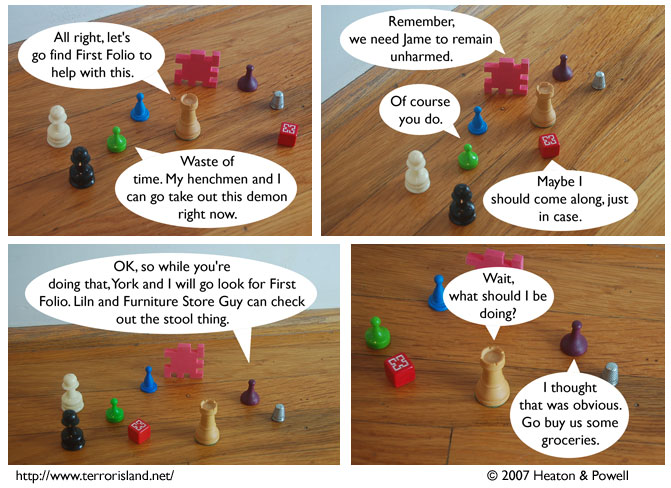

Strip #166
— Independence Day, 2007
The Green Grocer is bad at reassuring people that he won’t cause harm.
Notes, Thoughts, &c.
Ben’s Notes
Those guys are finally splitting up? It’s about time. Having to take pictures of nine pieces at once was starting to annoy me.
Now that I’ve said that, Friday’s strip is probably going to end up using ten or more characters.
Lewis’s Notes
People have been asking me why I don’t support George Washington’s Ghost for president. That’s simple: ghosts are spooky.
Happy Fourth of July. Ben’s birthday was yesterday, making him one day old, by my approximation.